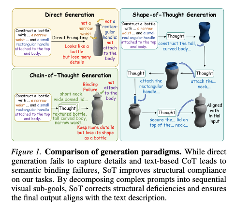
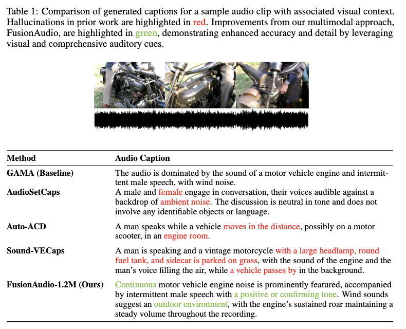
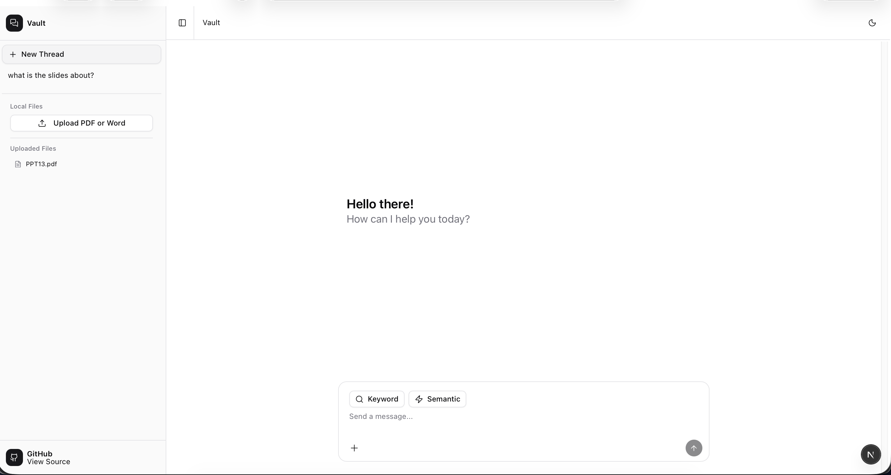

|
Owen Lee I'm Owen Lee, a computer science student at Chinese University of Hong Kong, Shenzhen, graduating in May 2026. I'll be studying computer science at University of Illinois Urbana-Champaign in Fall 2026. I'm interested in natural language processing and large language models, especially improving accuracy in information extraction and multimodal LLM systems. My work has been accepted at ACL 2026, with additional work accepted at ICML 2026. |
{kind=link}
ResearchI'm interested in natural language processing and large language models, with a focus on improving accuracy in information extraction and multimodal systems. |
|
 |
Shape of Thought: Progressive Object Assembly via Visual Chain-of-Thought
Yu Huo*, Siyu Zhang*, Kun Zeng*, Haoyue Liu, Owen Lee, Junlin Chen, Yuquan Lu, Yifu Guo Yaodong Liang Xiaoying Tang ICML, 2026 (Accepted) arXiv A visual CoT framework (SoT) that decomposes text-to-3D shape generation into sequential 2D visual sub-goals, enabling a single autoregressive model to capture shape-assembly logic and achieve +24% improvement in component numeracy. |
|
 |
FusionAudio-1.2M: Towards Fine-grained Audio Captioning with Multimodal Contextual Fusion
Shunian Chen*, Xinyuan Xie*, Zheshu Chen*, Owen Lee, Liyan Zhao, Zhan Su, Qilin Sun, Benyou Wang ACL, 2026 (Accepted) arXiv A two-stage automated pipeline that extracts multimodal contextual cues (speech, music, general sounds, and visual information) and uses an LLM to generate fine-grained audio captions, along with a 1.2M-scale dataset. |
Experience |
|
ATG Nexus Sdn Bhd
AI Engineering Intern • Jul 2025 – Oct 2025 |
|

|
China Unicom
Software Engineering Intern • May 2024 – Aug 2024 |
Side Projects |
|
 |
Vault: Local Document Semantic & Keyword Search
Personal Project Demo / GitHub A chat-style interface for searching local documents (PDF, Word) using keyword or semantic search. Users upload files, select a search mode, and query across document contents. All processing runs client-side with no data leaving the device. |
Miscellanea |
|
Feel free to steal this website's source code. Do not scrape the HTML from this page itself, as it includes analytics tags that you do not want on your own website — use the github code instead. Also, consider using Leonid Keselman's Jekyll fork of this page. |